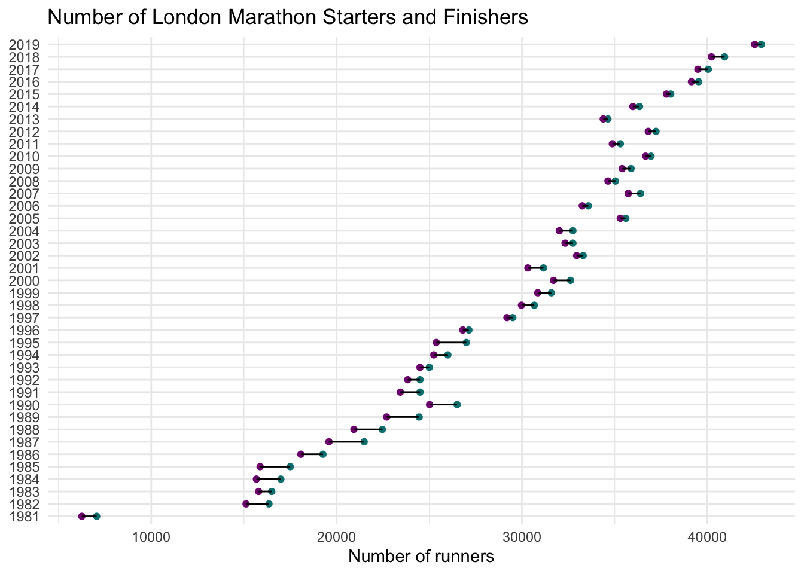
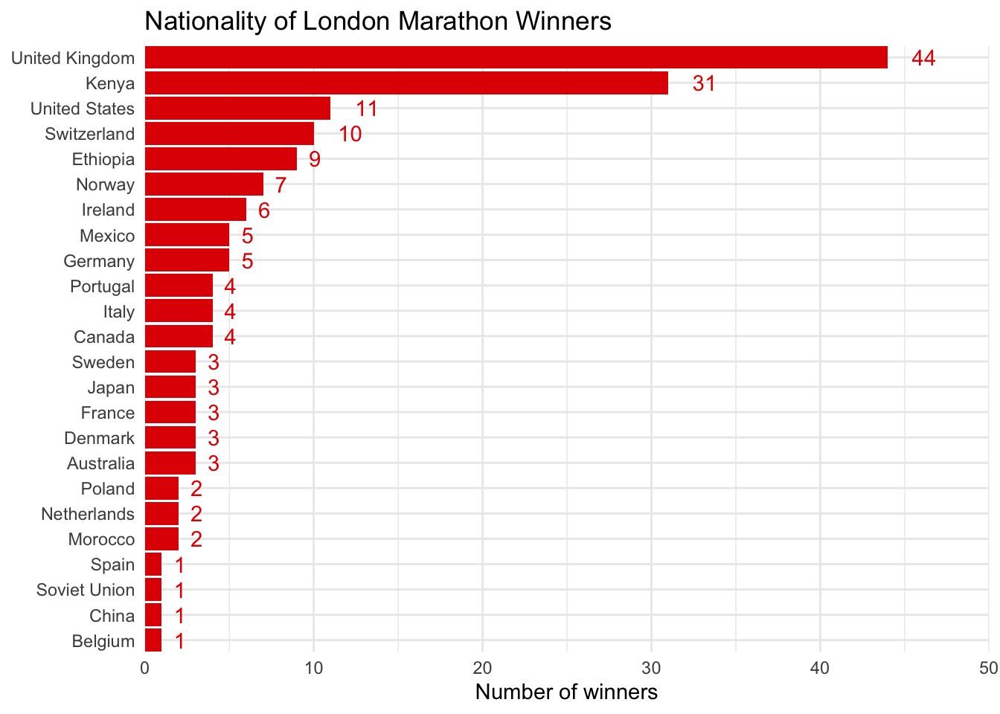

Select
# A tibble: 8 × 2
product sales_2019
<chr> <dbl>
1 widgets 2129
2 gadgets 723
3 widgets 1123
4 gadgets 2022
5 widgets -728
6 gadgets -423
7 widgets 633
8 gadgets 1204product_dat <- budget %>% select(2)
product_dat# A tibble: 8 × 1
product
<chr>
1 widgets
2 gadgets
3 widgets
4 gadgets
5 widgets
6 gadgets
7 widgets
8 gadgets| product | sales_2019 |
|---|---|
| widgets | 2129 |
| gadgets | 723 |
| widgets | 1123 |
| gadgets | 2022 |
| widgets | -728 |
| gadgets | -423 |
| widgets | 633 |
| gadgets | 1204 |
# A tibble: 8 × 2
product sales_2019
<chr> <dbl>
1 widgets 2129
2 gadgets 723
3 widgets 1123
4 gadgets 2022
5 widgets -728
6 gadgets -423
7 widgets 633
8 gadgets 1204Colon Notation
# A tibble: 8 × 3
region product sales_2019
<chr> <chr> <dbl>
1 North widgets 2129
2 North gadgets 723
3 South widgets 1123
4 South gadgets 2022
5 East widgets -728
6 East gadgets -423
7 West widgets 633
8 West gadgets 1204UNSELECT
FILTER
# A tibble: 2 × 8
region product sales_2019 sales_2020 expenses_2019 expenses_…¹ satis…² satis…³
<chr> <chr> <dbl> <dbl> <dbl> <dbl> <chr> <chr>
1 North widgets 2129 -517 822 -897 high very h…
2 North gadgets 723 77 1037 1115 very h… very h…
# … with abbreviated variable names ¹expenses_2020, ²satisfaction_2019,
# ³satisfaction_2020# A tibble: 1 × 8
region product sales_2019 sales_2020 expenses_2019 expenses_…¹ satis…² satis…³
<chr> <chr> <dbl> <dbl> <dbl> <dbl> <chr> <chr>
1 South gadgets 2022 -945 -610 200 low low
# … with abbreviated variable names ¹expenses_2020, ²satisfaction_2019,
# ³satisfaction_2020# A tibble: 6 × 8
region product sales_2019 sales_2020 expenses_2019 expenses_…¹ satis…² satis…³
<chr> <chr> <dbl> <dbl> <dbl> <dbl> <chr> <chr>
1 North widgets 2129 -517 822 -897 high very h…
2 North gadgets 723 77 1037 1115 very h… very h…
3 South widgets 1123 -1450 1004 672 high neutral
4 South gadgets 2022 -945 -610 200 low low
5 West widgets 633 790 783 -315 neutral neutral
6 West gadgets 1204 426 433 -136 low low
# … with abbreviated variable names ¹expenses_2020, ²satisfaction_2019,
# ³satisfaction_2020# A tibble: 6 × 8
region product sales_2019 sales_2020 expenses_2019 expenses_…¹ satis…² satis…³
<chr> <chr> <dbl> <dbl> <dbl> <dbl> <chr> <chr>
1 South widgets 1123 -1450 1004 672 high neutral
2 South gadgets 2022 -945 -610 200 low low
3 East widgets -728 -51 -801 -342 very l… very l…
4 East gadgets -423 -354 94 2036 neutral high
5 West widgets 633 790 783 -315 neutral neutral
6 West gadgets 1204 426 433 -136 low low
# … with abbreviated variable names ¹expenses_2020, ²satisfaction_2019,
# ³satisfaction_2020In
# retain any rows where region is north or south, and where product equals widget
budget %>%
filter(region %in% c("North", "South"),
product == "widgets")# A tibble: 2 × 8
region product sales_2019 sales_2020 expenses_2019 expenses_…¹ satis…² satis…³
<chr> <chr> <dbl> <dbl> <dbl> <dbl> <chr> <chr>
1 North widgets 2129 -517 822 -897 high very h…
2 South widgets 1123 -1450 1004 672 high neutral
# … with abbreviated variable names ¹expenses_2020, ²satisfaction_2019,
# ³satisfaction_2020# retain any rows where the region is not east or west, and where the product does not equal gadgets
budget %>%
filter(!region %in% c("East", "West"),
product != "gadgets")# A tibble: 2 × 8
region product sales_2019 sales_2020 expenses_2019 expenses_…¹ satis…² satis…³
<chr> <chr> <dbl> <dbl> <dbl> <dbl> <chr> <chr>
1 North widgets 2129 -517 822 -897 high very h…
2 South widgets 1123 -1450 1004 672 high neutral
# … with abbreviated variable names ¹expenses_2020, ²satisfaction_2019,
# ³satisfaction_2020[1] FALSE[1] TRUE[1] "yes"[1] "yes" [1] "a" "b" "c" "d" "e" "f" "g" "h" "i" "j" "k" "l" "m" "n" "o" "p" "q" "r" "s"
[20] "t" "u" "v" "w" "x" "y" "z" [1] "A" "B" "C" "D" "E" "F" "G" "H" "I" "J" "K" "L" "M" "N" "O" "P" "Q" "R" "S"
[20] "T" "U" "V" "W" "X" "Y" "Z"[1] 7Arrange
# A tibble: 8 × 8
region product sales_2019 sales_2020 expenses_2019 expenses_…¹ satis…² satis…³
<chr> <chr> <dbl> <dbl> <dbl> <dbl> <chr> <chr>
1 West gadgets 1204 426 433 -136 low low
2 South gadgets 2022 -945 -610 200 low low
3 North gadgets 723 77 1037 1115 very h… very h…
4 East gadgets -423 -354 94 2036 neutral high
5 West widgets 633 790 783 -315 neutral neutral
6 South widgets 1123 -1450 1004 672 high neutral
7 North widgets 2129 -517 822 -897 high very h…
8 East widgets -728 -51 -801 -342 very l… very l…
# … with abbreviated variable names ¹expenses_2020, ²satisfaction_2019,
# ³satisfaction_2020# A tibble: 8 × 8
region product sales_2019 sales_2020 expenses_2019 expenses_…¹ satis…² satis…³
<chr> <chr> <dbl> <dbl> <dbl> <dbl> <chr> <chr>
1 East gadgets -423 -354 94 2036 neutral high
2 North gadgets 723 77 1037 1115 very h… very h…
3 South gadgets 2022 -945 -610 200 low low
4 West gadgets 1204 426 433 -136 low low
5 East widgets -728 -51 -801 -342 very l… very l…
6 North widgets 2129 -517 822 -897 high very h…
7 South widgets 1123 -1450 1004 672 high neutral
8 West widgets 633 790 783 -315 neutral neutral
# … with abbreviated variable names ¹expenses_2020, ²satisfaction_2019,
# ³satisfaction_2020Mutate
budget2 <- budget %>%
mutate(
sales = sales_2019 + sales_2020,
expenses = expenses_2019 + expenses_2020,
profit = sales - expenses,
region = paste(region, "Office")
)
budget3 <- budget %>%
mutate(
A = 1,
B = 1:8,
C = mean(1:8),
D = c(1,2,1,2,1,2,1,2),
E = rep(1:2,4)
)Mutate with logic operators
budget2 <- budget2 %>%
mutate(profit_category = profit > 0,
product = as.factor(product))Using case_when
Summaries
# A tibble: 6 × 5
region product year sales expenses
<chr> <chr> <chr> <dbl> <dbl>
1 North widgets 2019 2129 822
2 North widgets 2020 -517 -897
3 North gadgets 2019 723 1037
4 North gadgets 2020 77 1115
5 South widgets 2019 1123 1004
6 South widgets 2020 -1450 672budget4 %>%
summarise(
mean_sales = mean(sales),
mean_expenses = mean(expenses),
min_profit = min(expenses - sales),
max_profit = max(expenses - sales)
)# A tibble: 1 × 4
mean_sales mean_expenses min_profit max_profit
<dbl> <dbl> <dbl> <dbl>
1 291. 318. -2632 2390Group_by
`summarise()` has grouped output by 'year'. You can override using the
`.groups` argument.
`summarise()` has grouped output by 'region'. You can override using the
`.groups` argument.Tidy Tuesday example
# Run once
# install this package
remotes::install_github("nrennie/LondonMarathon")Skipping install of 'LondonMarathon' from a github remote, the SHA1 (c83c6806) has not changed since last install.
Use `force = TRUE` to force installationdata(winners, package = "LondonMarathon")
data(london_marathon, package = "LondonMarathon")

```